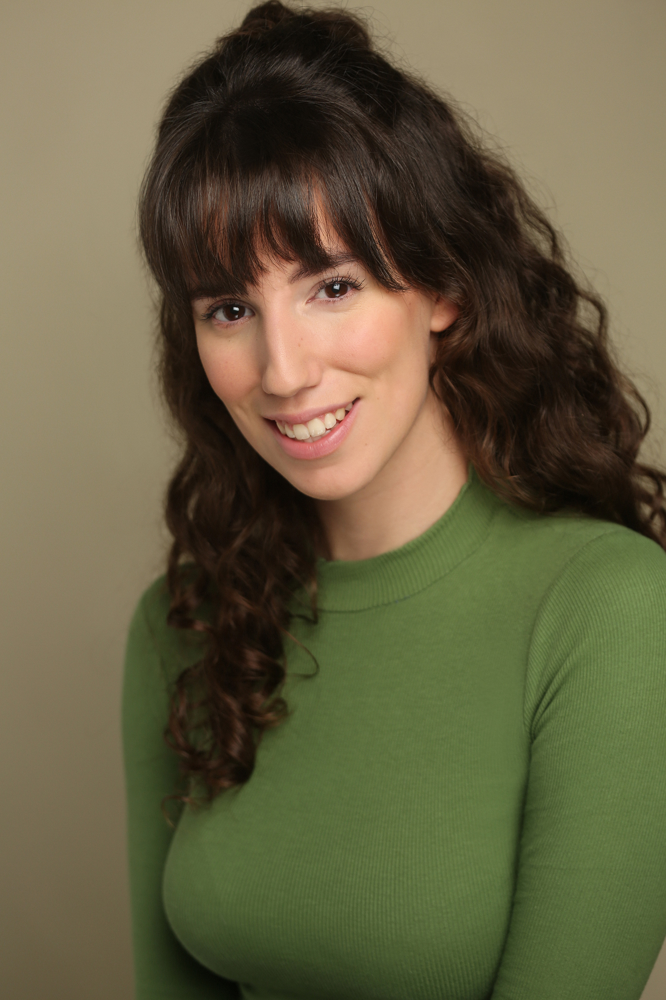
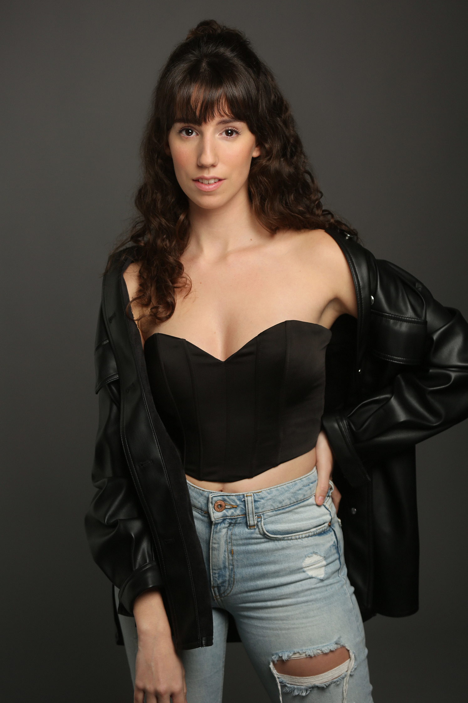
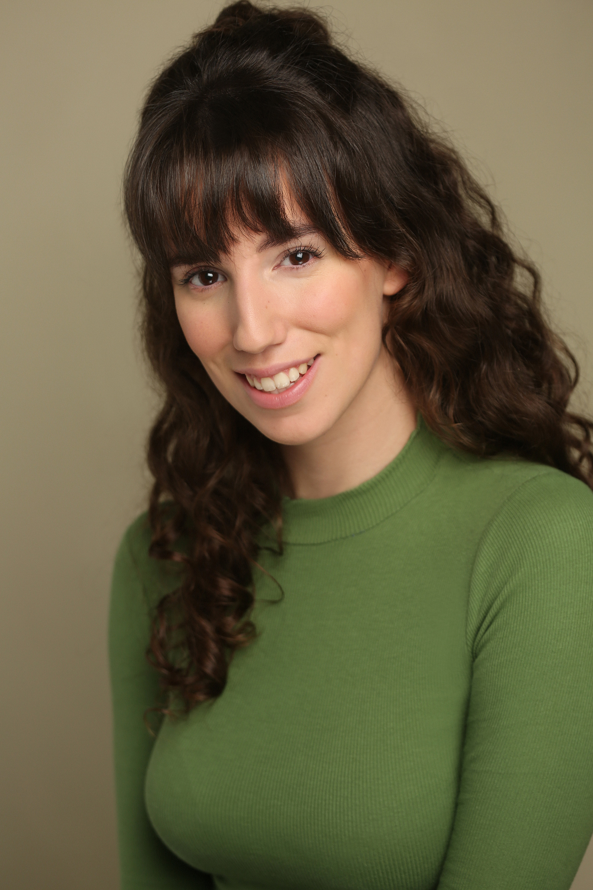
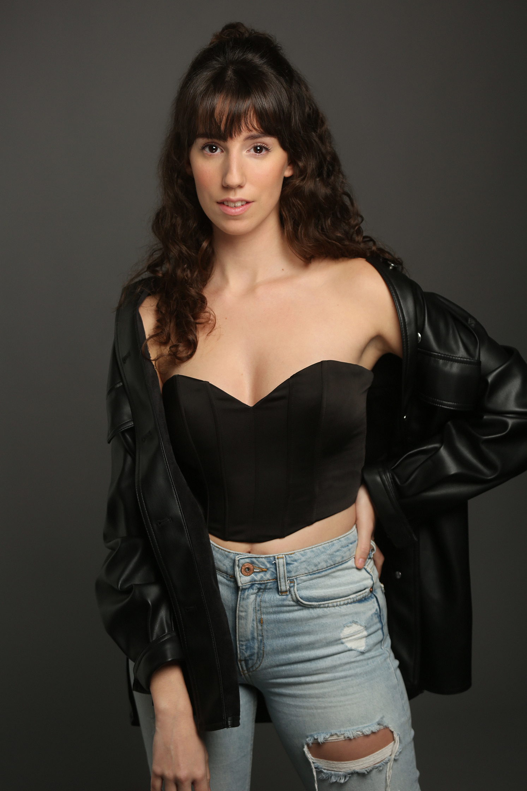
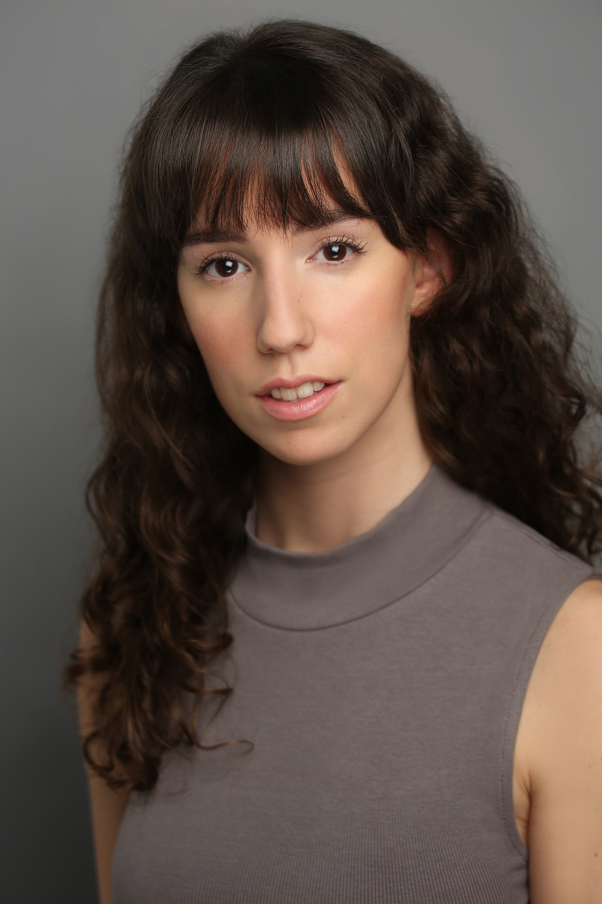
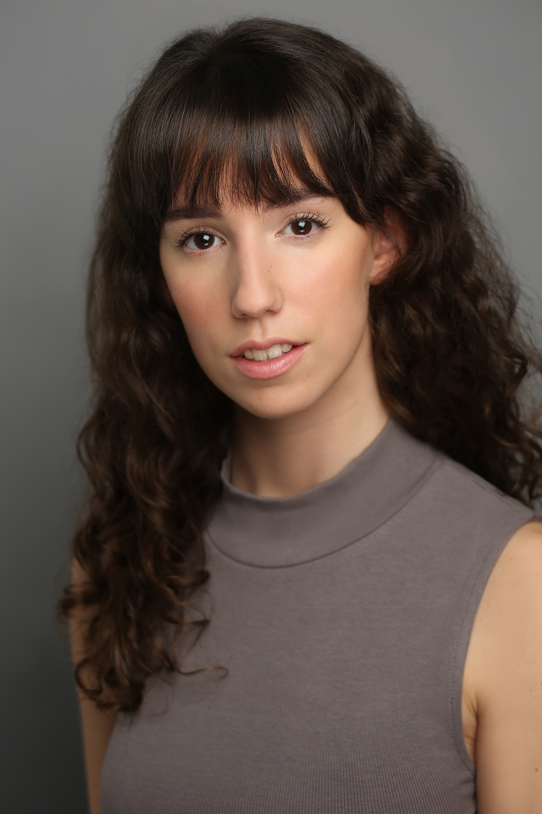

BIOGRAFÍA
Mi nombre es Laura Vives, actriz, cantante y bailarina mallorquina que actualmente reside en Madrid.
El arte ha sido una constante en mi vida desde muy temprana edad. Comencé mis estudios de teatro a los 6 años, y con el tiempo desarrollé una profunda pasión por esta disciplina. A los 9 años descubrí el canto interpretando el “Canto de la Sibila”, un canto de origen medieval que se canta durante la misa del gallo en Mallorca. Mi trayectoria vocal continuó en el coro juvenil de mi pueblo y a través de clases particulares con diversos profesores, perfeccionando mi técnica hasta el presente. La danza, aunque llegó después, ha encontrado un lugar esencial en mi carrera artística.
No fue hasta los 15 años que me uní a una escuela de teatro musical, la cual me brindó la oportunidad de formar parte de su compañía y dar mis primeros pasos en el ámbito profesional. Esta experiencia me permitió trabajar en esta profesión durante más de 5 años.
Al terminar el bachillerato, entré en la Escuela Superior de Arte Dramático de las Islas Baleares, en la que aprendí de grandes profesionales y me formé en distintas áreas como Interpretación, Canto y Danza, pero también en otras como Esgrima, Lucha escénica, Interpretación ante la cámara, Dramaturgia, etc. Esta educación ha sido crucial para mi desarrollo profesional y artístico.
Al finalizar mis estudios, decidí trasladarme a Madrid, donde resido actualmente. En esta ciudad, he continuado perfeccionándome, especialmente en danza y canto, con profesores destacados en el ámbito de los musicales.
En noviembre de 2023, recibí la llamada donde me comunicaban que formaba parte de “Madagascar, el musical”, y desde diciembre hasta marzo tuve el privilegio de trabajar en el Teatro La Latina.
 



 

FORMACIÓN
2018-2022 ESADIB Grado en Interpretación Textual
2015- Actualidad DANZA en diferentes Academias (Mandarina, ND Studio, Dance Escool…) con profesores como Oriol Anglada, Edu Llorens, Marcela Nava, Lucas Tadeo, etc.
2014-Actualidad CANTO Y ENTRENAMIENTO VOCAL con Sara Pérez, Alejandro De los Santos, Carlos Díaz, etc.
2023 WORKSHOP BROADWAY con Thayne Jasperson
2022-2023 INTERPRETACIÓN DE CANCIONES con Alejandro De los Santos
TEATRO MUSICAL
2023-2024 MADAGASCAR - Sunset Entertainment (Teatro La Latina): Elenco
2022-2023 LOS FANTASMAS DE MI CASA - NDProducciones : Elenco/Cover Protagonista
2023 CENICIENTA, LA LEYENDA - Toy Producciones : Protagonista
2022 ALICIA - Mallorca So / Romantic : Protagonista
2019-2020 LA SIRENITA - Mallorca So / Romantic : Protagonista
2018-2020 CAPUTXETA - Mallorca So / Romantic : Elenco/Cover Protagonista
2017-2019 BELLA Y BESTIA - Mallorca So / Romantic : Elenco/Cover Protagonista
2016-2017 FROZEN - Mallorca So / Romantic : Elenco
CANTANTE
2020-Actualidad CANTANTE SOLISTA - Xarxa Musical Mallorca
2023 CANTANTE en CORO - Dirigido por Sara Pérez, Centenario “Casa del Libro” (Casa Real presente)
2023 CANTANTE SOLISTA - Restaurante Descaro Madrid
HABILIDADES
CANTO: Soprano/Mezzo-Soprano. Lectura de Partituras.
DANZA: Broadway Jazz, Latin Jazz, Ballet, Modern y Claqué.
LUCHA ESCÉNICA y ESGRIMA.
IDIOMAS: Castellano, Catalán e Inglés.